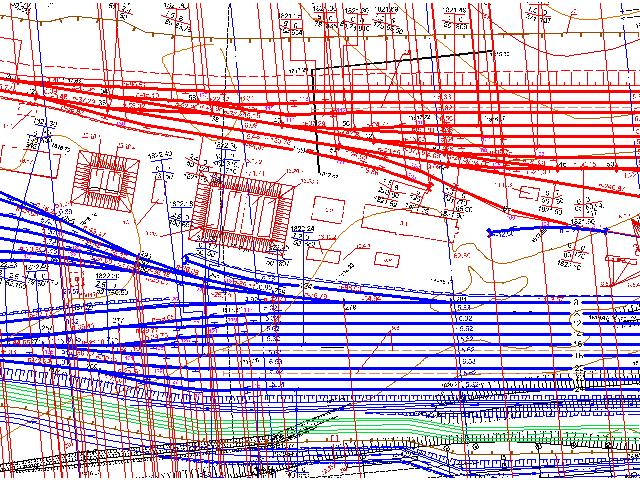
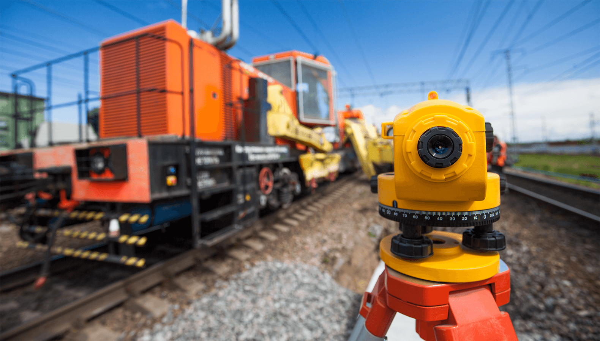
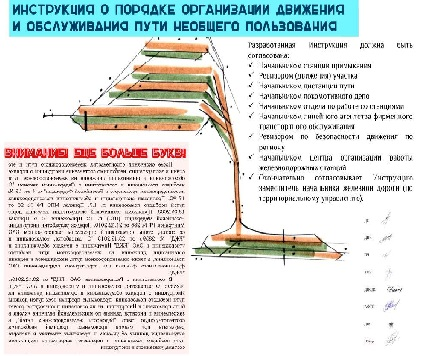
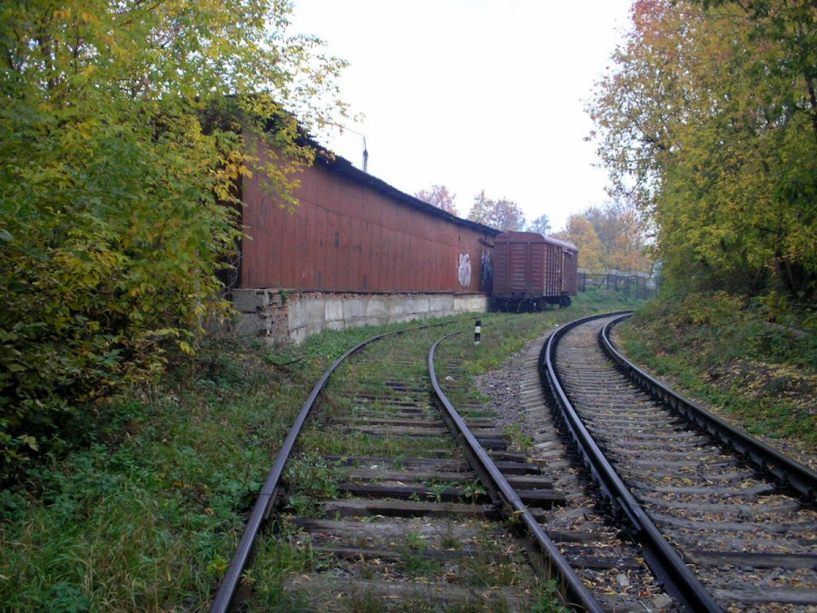
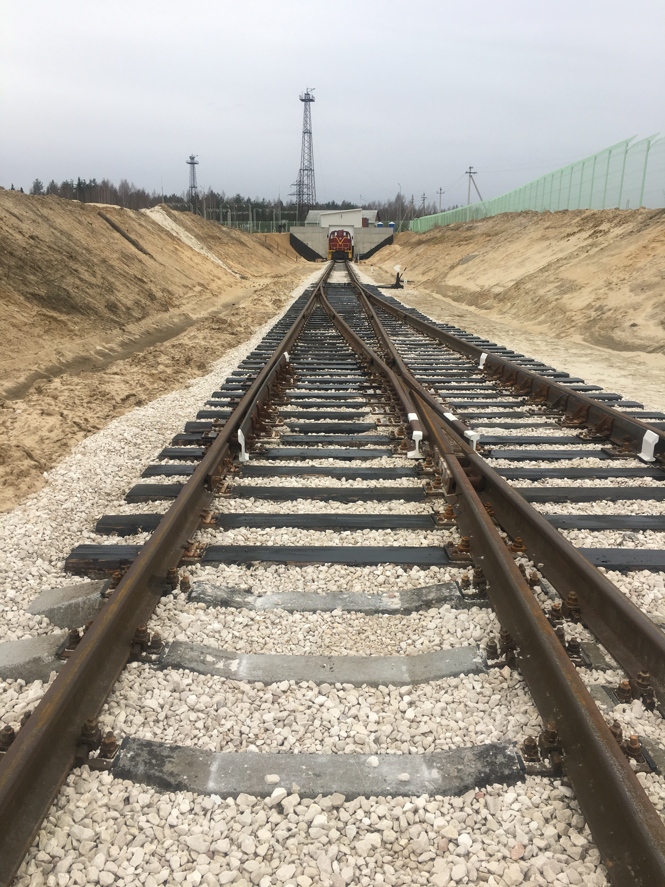
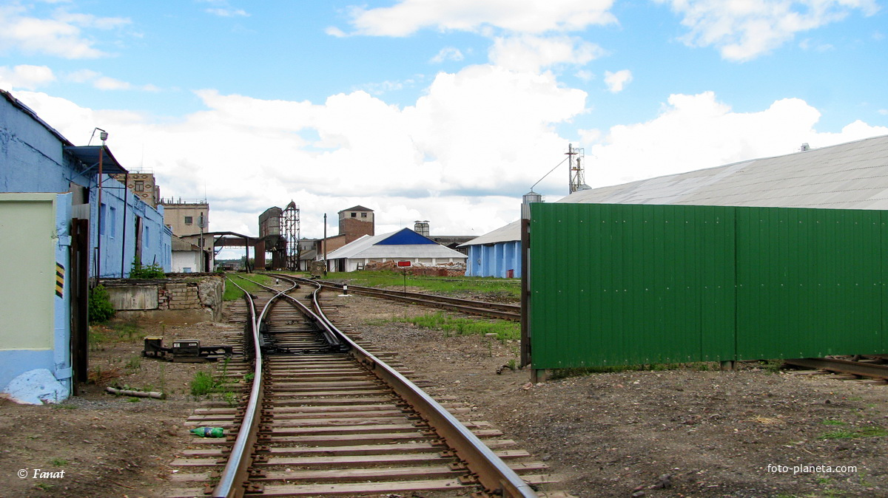

Строительство
Инженерное
Проектирование
Железнодорожного
Транспорта
Коротко о Нас...
Мы-это союз специалистов, имеющих богатейший опыт работы в сфере железнодорожного транспорта, как в строительстве, так и в эксплуатации. Каждый из нас имеет продолжительный стаж работы в ОАО "РЖД". Наш девиз - "Нет нерешаемых проблем - есть лишь не правильные пути их решения!



.
Перечень услуг.
Мы поможем с подготовкой исходно-разрешительной документации, подготовим предпроектные проработки для получения исходных данных (технических условий), разработаем проектную документацию в соответствии с заданием на проектирование и техническими условиями, готовы осуществлять авторский надзор за процессом строительства.
Выполним строительно-монтажные работы как новых, так и реконструируемых объектов железнодорожной автоматики, сигнализации, централизации и блокировки, готовы принять на обслуживание готовые и законченные железнодорожные объекты для организации их бесперебойной работы.
Наши специалисты помогут разобраться с самыми сложными и запутанными вопросами в сфере взаимодействия предприятий и организаций, при этом не упуская из внимания вопросы актуальности и законности принятых решений.
1. Разработка нормативной и проектной документации:
1.1 ИНСТРУКЦИЙ О ПОРЯДКЕ ОБСЛУЖИВАНИЯ И ОРГАНИЗАЦИИ ДВИЖЕНИЯ НА ЖЕЛЕЗНОДОРОЖНЫХ ПУТЯХ НЕОБЩЕГО ПОЛЬЗОВАНИЯ.
1.2 ПРЕДПРОЕКТНОЙ ПРОРАБОТКИ ДЛЯ ПОЛУЧЕНИЯ ИСХОДНЫХ ДАННЫХ ДЛЯ ПРОЕКТИРОВАНИЯ ОБЪЕКТОВ И ИНФРАСТРУКТУРЫ ЖЕЛЕЗНОДОРОЖНОГО ТРАНСПОРТА
1.3 ПРОЕКТНОЙ ДОКУМЕНТАЦИИ НА СТРОИТЕЛЬСТВО ИНФРАСТРУКТУРЫ ЖЕЛЕЗНОДОРОЖНОГО ТРАНСПОРТА
1.4 ТЕХНОЛОГИЧЕСКИХ ПРОЦЕССОВ РАБОТЫ ЖЕЛЕЗНОДОРОЖНЫХ СТАНЦИЙ.
1.5 ТЕХНИКО-РАСПОРЯДИТЕЛЬНЫХ АКТОВ ЖЕЛЕЗНОДОРОЖНЫХ СТАНЦИЙ И РАЗЪЕЗДОВ
1.6 ИНСТРУКЦИЙ ПО СИГНАЛИЗАЦИИ, ЦЕНТРАЛИЗАЦИИ И БЛОКИРОВКИ.
1.7 МЕСТНЫХ ИНСТРУКЦИЙ (ПО РАЗЛИЧНЫМ СПЕЦИФИКАМ).
1.8 ПРОЕКТОВ ПРОИЗВОДСТВА РАБОТ
1.9 ТЕХНИЧЕСКИХ ПАСПОРТОВ ЖЕЛЕЗНОДОРОЖНЫХ ПУТЕЙ НЕОБЩЕГО ПОЛЬЗОВАНИЯ
1.10 ЕДИНЫХ ТЕХНОЛОГИЧЕСКИХ ПРОЦЕССОВ (ЕТП).
2. Консультационные услуги и экспертный консалтинг
2.1 ПО ПОЛУЧЕНИЮ ИСХОДНЫХ ДАННЫХ (ТЕХНИЧЕСКИХ УСЛОВИЙ) НА ПРОЕКТИРОВАНИЕ ЖЕЛЕЗНОДОРОЖНОЙ ИНФРАСТРУКТУРЫ ДЛЯ ПРИМЫКАНИЯ ПУТЕЙ НЕОБЩЕГО ПОЛЬЗОВАНИЯ К ИНФРАСТРУКТУРЕ ОБЩЕГО ПОЛЬЗОВАНИЯ.
2.2 ПО ПОЛУЧЕНИЮ АКТА ДОПУСКА ДЛЯ ПРОИЗВОДСТВА СТРОИТЕЛЬНО-МОНТАЖНЫХ РАБОТ В ПОЛОСЕ ОТВОДА ЖЕЛЕЗНЫХ ДОРОГ.
2.3 ПО ПОДГОТОВКЕ КОМПЛЕКТА ИСПОЛНИТЕЛЬНОЙ ДОКУМЕНТАЦИИ
3. Строительно-монтажные работы и обслуживание.
3.1 Строительно-монтажные работы и обслуживание устройств сигнализации, централизации и блокировки.
3.2 Работы по интеграции новых устройств железнодорожной автоматики, сигнализации, централизации и блокировки в действующую инфраструктуру.
3.3 Ремонтные и аварийно-восстановительные работы по устройствам железнодорожной автоматики, сигнализации, централизации и блокировки.
Наши работы.
Специалистами ООО «СИП-ЖДТ» были разработаны инструкции о порядке обслуживания и организации движения на железнодорожном пути необщего пользования ООО «Регион», ООО «Профи», ООО «Стрелец», ООО «Дальстар» и др. Были подготовлены предпроектные решения по реализации примыкания железнодорожной инфраструктуры необщего пользования к железнодорожной инфраструктуре ОАО «РЖД» крупнейших компаний в Приморском крае.
Благодаря богатейшему опыту в сфере строительства железнодорожной инфраструктуры в кратчайшие сроки были согласованы более десятка актов-допусков для производства строительно-монтажных работ в полосе отвода железных дорог. У каждого специалиста ООО «СИП-ЖДТ» за плечами десятилетний опыт работы в сфере железнодорожного транспорта и строительства железнодорожной инфраструктуры.


